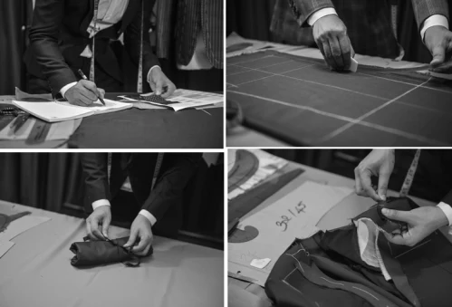

2009
A small shop. A clear purpose.
Veston Duy Nguyễn opens in Hanoi. Duy Nguyễn runs the shop while continuing to study tailoring and European suit construction. Learning, making and improving become part of the same daily work.
Read the 10-year story · VnExpress